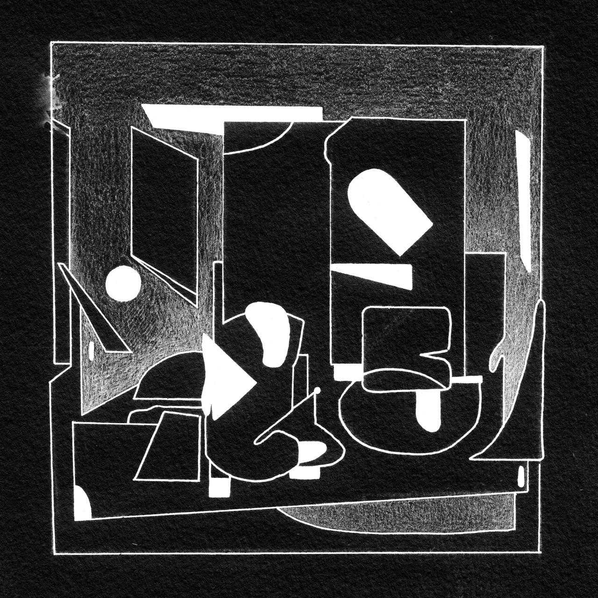

Dactyly
Lil Data

Buy on Subvert- quadridigitus3:08
- octidigitus2:27
- sedecimdigitus3:28
- duotrigintidigitus1:51
Recording Tine Vrabič, Adela Festival, Ljudmila Art and Science Laboratory
Mastering Jack Armitage
Artwork Freyja Reynisdóttir
PAM presets 32tips